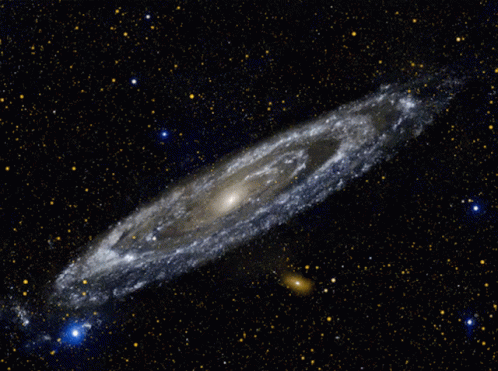

100 – 400 Billion Stars
Our galaxy contains hundreds of billions of stars. The Sun is just one of them — an ordinary star sitting in one of the Milky Way's spiral arms.
Welcome to your neighbourhood planetarium. Step inside to discover the wonders of our galaxy in plain language.
Our home galaxy — a giant spiral of stars, gas, and mystery.
Our galaxy contains hundreds of billions of stars. The Sun is just one of them — an ordinary star sitting in one of the Milky Way's spiral arms.
If you could travel at the speed of light, it would still take 100,000 years to cross the Milky Way from one side to the other.
Our entire solar system orbits the center of the Milky Way. One full orbit takes about 225 million Earth years to complete.
At the very heart of the Milky Way sits a supermassive black hole. It is about 4 million times more massive than our Sun.
Two smaller galaxies — the Large and Small Magellanic Clouds — orbit the Milky Way and are visible from Earth's southern hemisphere.
Our solar system is in a smaller spiral arm called the Orion Arm, roughly 26,000 light-years from the galactic center.

Zoom out past the Milky Way and discover just how vast existence really is.
The observable universe stretches about 93 billion light-years across. Beyond that we simply cannot see — light from those regions hasn't reached us yet.
The Milky Way is just one of an estimated 2 trillion galaxies. Each galaxy contains billions to trillions of stars — more than all the grains of sand on every beach on Earth.
The universe began with the Big Bang about 13.8 billion years ago. Our solar system didn't form until the universe was already 9 billion years old.
Only about 5% of the universe is made of ordinary matter. The rest is dark matter (27%) and dark energy (68%) — things we can't see but know exist.
Learn about our home planet then explore the rest of the solar system.